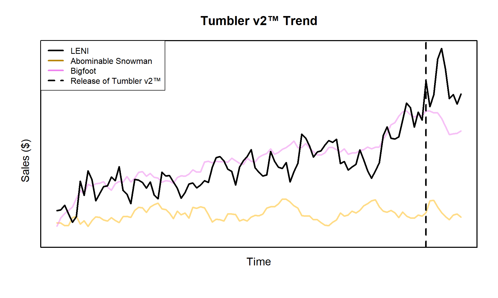

An Unhinged Introduction to State Space Models with STAN
Motivation: More Ice Please
Let’s say you work for a drinkware company, we’ll call it something generic, maybe “Large bi-pEdal sNow cryptId”? Or LENI for short. LENI sells mugs, wine glasses, water glasses, and tumblers. The recent lack of innovation in the tumbler market has led to public outcry. As a response, you release Tumbler v2™. This exciting new technology features the same size tumblers you know an love, but with double the ice capacity. You even come up with a catchy slogan:
As a result of your genius ideas, your tumbler sales being to pick up:

The final frontier
Your tumbler sales are putting all your rival drinkware companies, like “Abominable Snowman”, to shame. But just how much of your sales are incremental and aren’t just due to the usual seasonality, or positive overall industry growth. Can you quantify with some degree of certain the incremental sales you’ve realized from launching Tumbler v2™?
To approach this problem, we will use state space models. A class of models that assumes that our data generating process has some underlying state that gives rise to our actually observed variables. For instance, in the time series plot above, a state space approach would assume that each point in the time series is generated from some latent unobserved state which has its own distribution. For this time series analysis state space problem, we will used the widely adopted and used approach of (Durbin and Koopman 2001). The governing equation for this system is given by:
\[\begin{align} y_t &= Z_t\alpha_t + \varepsilon_t\\ \alpha_{t+1} &= T_t \alpha_t + R_t \eta_t \end{align}\]
where
\[\varepsilon_t \sim N(0,H_t) \hspace{2mm} \text{and} \hspace{2mm} \eta_t \sim N(0,Q_t)\] You might only recognize \(y_t\), the sales from our Tumbler v2, from the equation above. But allow me to introduce the full cast of characters:
| \(y_t\) | \(p \times 1\) | Observations | \(Z_t\) | \(p \times m\) | Design Matrix |
| \(\alpha_t\) | \(m \times 1\) | (Latent) State | \(T_t\) | \(m \times m\) | Transition Matrix |
| \(\varepsilon_t\) | \(p \times 1\) | Obs. Disturbance | \(H_t\) | \(p \times p\) | Obs. Covariance Matrix |
| \(\eta_t\) | \(r \times 1\) | State Disturbance | \(R_t\) | \(m \times r\) | State Disturbance Selection Matrix |
| \(Q_t\) | \(r \times r\) | State Covariance Matrix | |||
| \(a_1\) | \(m \times 1\) | Initial State Expected Value | \(P_1\) | \(m \times m\) | Initial State Covariance Matrix |
Here \(\alpha_t\) is the underlying latent state that gives rise to our time series realizations \(y_t\). As state before, the latent state \(\alpha_t\) has its own distribution, which we can now deduce from the equation above is given by \(\alpha_t \sim N(a_t, Q_t)\). Notice from our table above that \(\alpha_t\) is not the same size as \(y_t\). Our observations \(y_t\) is a vector of length \(p\), which will be one for our case here. Conversely, \(\alpha_t\) is of size \(m\). This is because \(\alpha_t\) will act as the conduit for all the effects and assumptions we impose on the model.
This is one of the best utilities provided by state space models. We have the ability to add smaller effects together and extract them at the end of the modeling process to further understand the structure of our time series. For example, you might want to impose a 52 week seasonality (1 year), positive industry trend growth, additive regression effects, and maybe even a AR(n) process to account for now autocorrelation. All of this information is packed in \(\alpha_t\) which we’ll demonstrate later.
The matrix \(Z_t\) provides the translation from \(\mathbb{R}^m\) to \(\mathbb{R}^p\), which our case is just one dimension. Therefore, \(Z_t\) reduces down to a vector, but this is not the case in general. Some of the data that \(Z_t\) might hold is the \(x_t\) for the regression component of our time series. Usually, \(Z_t\) is filled with 1s and 0s to select different components of \(\alpha_t\) that are used for \(y_t\). As we’ll see later, there are many components of \(\alpha_t\) that don’t directly impact \(y_t\), but are strategically placed to help \(\alpha_t\) itself evolve over time.
This is a great segue to our transition matrix \(T_t\). The transition matrix is what evolves \(\alpha_t\) to the next state \(\alpha_{t+1}\). This again can take multiple forms. It might be the stage in the process where a positive industry trend is added to the overall series or where we move from season to season.
Finally we have \(R_t\), the state disturbance selection matrix. Notice that everything up to this point has had a \(t\) subscript. While we are modeling a time series, it is not true that every element of \(\alpha_t\) has to vary over time. In fact, most of the time the regression coefficients (if included) are usually static with respect to time. The way we tell this model to account for static elements of \(\alpha_t\) is to not add any disturbance to them. Lets consider a very simple local linear trend model:
\[\begin{align} y_t &= \mu_t + \varepsilon_t\\ \mu_{t + 1} &= \mu_{t} + \nu_{t} + \eta_{t}\\ \nu_{t+1} &= \nu_{t} \end{align}\]
Our cast of characters now wear the following costumes:
\[\alpha_t = \begin{bmatrix} \mu_t \\ \nu_t\end{bmatrix} \hspace{10mm} Z_t = \begin{bmatrix} 1 & 0\\ \end{bmatrix}\] \[T_t = \begin{bmatrix}1 & 1\\ 0 & 1 \end{bmatrix} \hspace{5mm} R_t = \begin{bmatrix}1\\ 0\end{bmatrix}\] Clearly, \(\eta_t\) is just a 1-D normal with variance \(Q_t\), and thus as \(\alpha_t\) evolves over time its element \(\nu_{n+1} = \nu_{n}\) for all \(n\in [1,t]\). I’m sure you can already see the powerful flexibility we’ve been afforded by this modeling system.
Now, the only variables I have yet to mention are \(a_1\) and \(P_1\). These dictate the distribution of our starting state. That is \(\alpha_1 \sim N(a_1, P_1)\). These initial values are assumed to be known at the time of modeling. In reality these are rarely known and there is a large amount of theory to approximate the best starting value of these based on asymptotics. For more information, check out chapter 5 of (Durbin and Koopman 2001). But, we are Bayesians after all are we not? If we don’t know something we just chuck a prior at it. Although we will abide by the suggestion in chapter 5 and set \(a_1 = \bf{0}\).
I prefer Autumn
One of the key components we’ll utilize is seasonality. This means that for some repeating point in time, we want to see the same, or slightly modified effect. For example, we might observe seasonality in consumer purchasing behavior. Big spikes occur during the holidays when everyone is purchasing Tumbler v2s to give to their ice enthusiast friends at Christmas, but then sales slowly die off. It’s a tale as old as time that we’ll see again next Christmas.
We’ll go about this by considering a 4 season example. This might be data that is collected every quarter for a company. We’ll define four season parameters denoted by \(\gamma_j\), where \(j \in [1,4]\). We’ll assume make the assumption that all seasonal effects will add to zero. This makes sense if we assume that a seasonal effect is just some perturbation against the underlying trend. Consider the following:
n_ex1 <- 4*5
ss_comp_ex1 <- cos(seq(0,2*pi, length.out=4))*10
ss_ex1 <- rep(ss_comp_ex1 - mean(ss_comp_ex1),5)
trend_ex1 <- cumsum(rnorm(n_ex1) + 0.5)
par(mfrow=c(1,3))
plot(ss_ex1, type='b', lwd=3, pch=16)
Mine is a Brita
For sake of completeness, let’s review the assumptions we made about our data generating process by imposing this system of equations:
- \(y_t\) is a linear function of the latent state \(\alpha_t\)
- The disturbances of our data generating process are normally distributed
- The disturbances of our latent state are normally distributed.
These unassuming assumptions allow us to now leverage the power of the Kalman filter. Without going into too much detail, filtering is just the process of updating what we expect given what we have observed. Assume that we have seen the first 4 realizations of some time series process. We are not in the dark about. We have some knowledge about what the 5th observation might be. If the first 4 had values between 1 and 10, we can be pretty sure that the 5th realization won’t be 1,000. This is of course a gross oversimplification, but if our process follows the assumptions outlined above, we can use the Kalman filter to quantify the uncertainty and expected value of our 5th observation.
Don’t forget to Moisturize
sessionInfo()## R version 4.1.1 (2021-08-10)
## Platform: x86_64-w64-mingw32/x64 (64-bit)
## Running under: Windows 10 x64 (build 19045)
##
## Matrix products: default
##
## locale:
## [1] LC_COLLATE=English_United States.1252
## [2] LC_CTYPE=English_United States.1252
## [3] LC_MONETARY=English_United States.1252
## [4] LC_NUMERIC=C
## [5] LC_TIME=English_United States.1252
##
## attached base packages:
## [1] stats graphics grDevices utils datasets methods base
##
## other attached packages:
## [1] kableExtra_1.3.4 cmdstanr_0.5.3
##
## loaded via a namespace (and not attached):
## [1] tidyselect_1.1.1 xfun_0.27 bslib_0.3.1
## [4] purrr_0.3.4 colorspace_2.0-2 vctrs_0.4.1
## [7] generics_0.1.1 htmltools_0.5.2 viridisLite_0.4.0
## [10] yaml_2.2.1 utf8_1.2.2 rlang_1.0.3
## [13] jquerylib_0.1.4 pillar_1.6.4 glue_1.6.2
## [16] DBI_1.1.3 distributional_0.3.1 lifecycle_1.0.1
## [19] stringr_1.4.0 posterior_1.3.1 munsell_0.5.0
## [22] gtable_0.3.0 rvest_1.0.2 evaluate_0.14
## [25] knitr_1.36 fastmap_1.1.0 fansi_0.5.0
## [28] highr_0.9 scales_1.1.1 backports_1.4.1
## [31] checkmate_2.0.0 webshot_0.5.4 jsonlite_1.7.2
## [34] abind_1.4-5 farver_2.1.0 systemfonts_1.0.4
## [37] tensorA_0.36.2 ggplot2_3.3.5 digest_0.6.28
## [40] stringi_1.7.5 dplyr_1.0.9 grid_4.1.1
## [43] cli_3.3.0 tools_4.1.1 magrittr_2.0.1
## [46] sass_0.4.0 tibble_3.1.6 crayon_1.4.2
## [49] pkgconfig_2.0.3 ellipsis_0.3.2 xml2_1.3.3
## [52] assertthat_0.2.1 rmarkdown_2.11 svglite_2.1.0
## [55] httr_1.4.3 rstudioapi_0.13 R6_2.5.1
## [58] compiler_4.1.1